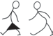

Ili kuepuka uchafuzi wa vyanzo vya maji, tunapaswa kutumia vyoo bora, kutupa
taka katika maeneo maalum yaliyotengwa, kuoga kwa kutumia majitiririka na kufua nguo mbali na vyanzo vya
maji.
Pia tunapaswa kuepuka kunywesha mifugo ndani au karibu na vyanzo vya
maji.
Aidha, sheria zinazokataza kufanya vitendo vinavyohusisha uchafuzi wa vyanzo vya
maji zinapaswa kutekelezwa.

Kazi ya kufanya namba 2
Tembelea chanzo cha maji kilichopo katika maeneo unayoishi, kisha:
1.
Baini vitendo na shughuli mbalimbali za binadamu zinazofanyika karibu au
kwenye chanzo hicho; na
2.
Andika ufupisho kuelezea namna shughuli na vitendo hivyo vinavyochangia
uharibifu wa chanzo hicho.
Matumizi mabaya na makubwa ya maji
Maji ni rasilimali muhimu kwa maisha ya binadamu na viumbehai wengine.
Pamoja na umuhimu wake, kuna upotevu mkubwa wa maji katika mazingira
yetu.
Upotevu huo hutokana na matumizi makubwa na mabaya ya maji, mfano kuacha bomba
lililopasuka likitiririsha maji, na kutofunga bomba baada ya matumizi.
Vilevile, kilimo cha umwagiliaji hutumia kiasi kikubwa cha maji kutoka kwenye
mito na mabwawa.
Matumizi makubwa na mabaya ya maji yanaweza kusababisha vyanzo vya maji kama
mito, mabwawa na maziwa kuwa na upungufu mkubwa wa maji.
Kukauka kwa vyanzo vya maji husababisha ukosefu wa huduma muhimu ya maji.
Kielelezo namba 4 kinawasilisha watu wakiacha bomba lililopasuka likitiririsha
maji na kusababisha upotevu mkubwa wa maji.